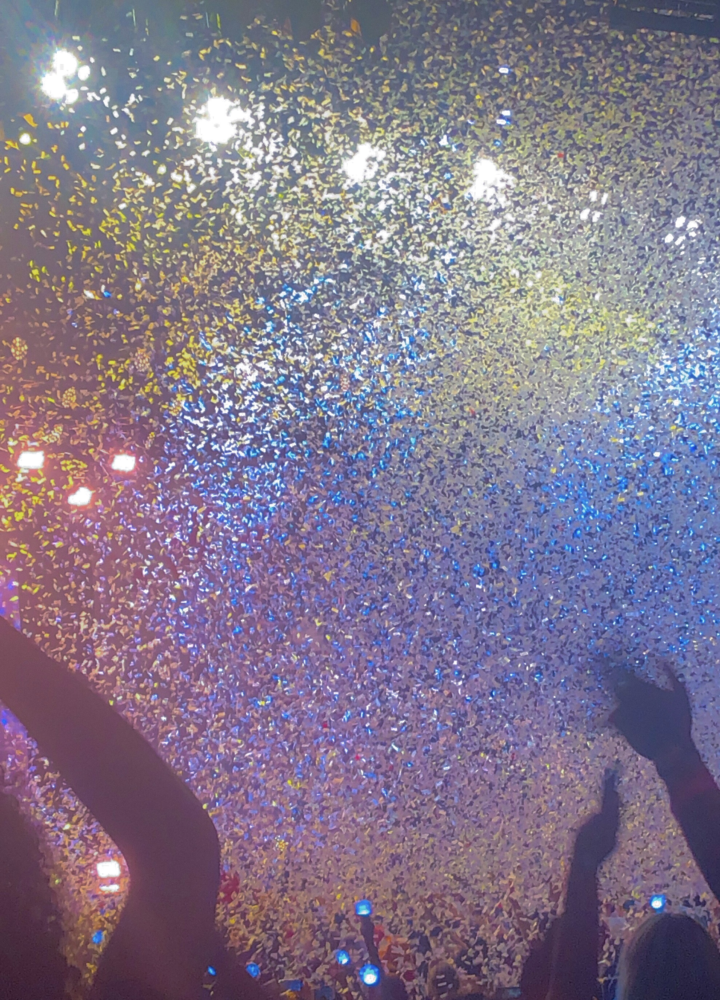

My name is Angelina Santiago. I am currently majoring in Emerging Media Technology with a concentration in Game Design and Interactive Media. I am someone who enjoys art in all its many different forms whether it be writing, drawing, film, or photography. I have attended different art schools over the years. These past experiences at these schools have helped me to understand how art can be used to convey a message to the viewer, which I always found fascinating.
My professional goals are to pursue a career which gives me creative freedom. I’m not sure where my degree will take me. However, I know that my degree and main focus is to utilize the skills that I learn throughout the rest of my college experience to expand my knowledge and broaden my horizons in order to better navigate the workforce.